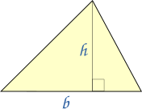
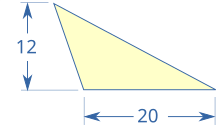
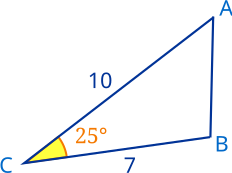
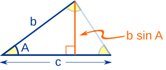
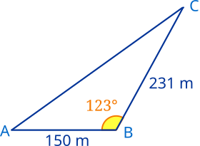

Area of Triangles
There are several ways to find the area of a triangle:
Knowing Base and Height

When we know the base and height it is easy.
It is simply half of b times h
Area = 12bh
The most important thing is that the base and height are at right angles. The Triangles page explains more.
Have a play here:
Example: What is the area of this triangle?

(Note: 12 is the height, not the length of the left-hand side)
Knowing Three Sides

There's also a formula to find the area of any triangle when we know the lengths of all three of its sides.
This can be found on the Heron's Formula page.
Knowing Two Sides and the Included Angle

When we know two sides and the included angle (SAS), there is another formula (in fact three equivalent formulas) we can use.
Depending on which sides and angles we know, the formula can be written in three ways:
Area = 12ab sin C
Area = 12bc sin A
Area = 12ca sin B
They are really the same formula, just with the sides and angle changed.
Example: Find the area of this triangle:

First of all we must decide what we know.
We know angle C = 25º, and sides a = 7 and b = 10.
So let's get going:
How to Remember
Just think "abc": Area = ½ a b sin C
It is also good to remember that the angle is always between the two known sides, called the "included angle".
How Does it Work?
We start with this formula:
Area = ½ × base × height
We know the base is c, and can work out the height:

the height is b × sin A
So we get:
Area = ½ × (c) × (b × sin A)
Which can be simplified to:
Area = 12bc sin A
By changing the labels on the triangle we can also get:
- Area = ½ ab sin C
- Area = ½ ca sin B
One more example:
Example: Find How Much Land

Farmer Rigby owns a triangular piece of land.
The length of the fence AB is 150 m. The length of the fence BC is 231 m.
The angle between fence AB and fence BC is 123º.
How much land does Farmer Rigby own?
First of all we must decide which lengths and angles we know:
- AB = c = 150 m,
- BC = a = 231 m,
- and angle B = 123º
So we use:
Area = 12ca sin B
Farmer Rigby has 14,530 m2 of land